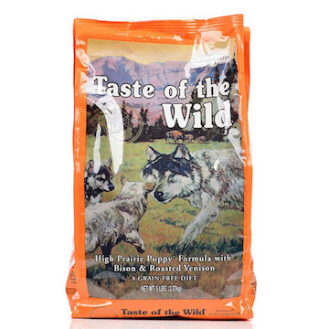

Logan's Food
Below is a list of Logan's favorite meats.
- Turkey
- Boiled Chicken
- Salami
- Ham
For breakfast, lunch and dinner, Logan eats "Taste of the Wild" puppy food with pieces of tukey or freeze-dried chicken drizzled with chicken broth. Below is a picture of his kibble.

Home